Phong cách thiết kế nội thất không chỉ phản ánh gu thẩm mỹ mà còn thể hiện cá tính và lối sống của mỗi gia chủ. Từ những đường nét tối giản, tinh tế đến vẻ đẹp sang trọng hay gần gũi với thiên nhiên, mỗi phong cách đều mang đến một dấu ấn riêng cho không gian sống. Vậy đâu là lựa chọn phù hợp nhất với bạn? Hãy cùng AVA Architects khám phá ở bài viết dưới đây để tìm ra nguồn cảm hứng hoàn hảo cho tổ ấm của mình.
Phong cách thiết kế nội thất Đông Dương (Indochine)
Phong cách thiết kế nội thất Indochine, hay còn được biết đến với tên gọi phong cách thiết kế Đông Dương, hình thành và phát triển mạnh mẽ vào cuối thế kỷ 19 – đầu thế kỷ 20. Trải qua thời gian, phong cách này không hề mai một mà còn quay trở lại đầy ấn tượng, mang theo hơi thở hoài niệm của quá khứ hòa quyện cùng nhịp sống đương đại. Ngày nay, Indochine được xem là biểu tượng thiết kế quen thuộc trong các khu nghỉ dưỡng và khách sạn cao cấp tại Việt Nam.
Phong cách Đông Dương là sự kết hợp giữa kiến trúc Pháp và nét đẹp truyền thống Á Đông (C: Internet)
Bản chất của phong cách thiết kế nội thất Indochine là sự giao thoa tinh tế giữa văn hóa bản địa Việt Nam và tinh thần kiến trúc – nội thất Pháp. Sự kết hợp Đông – Tây này tạo nên một tổng thể hài hòa, vừa sang trọng vừa gần gũi, thể hiện rõ chiều sâu mỹ thuật, bản sắc dân tộc và dấu ấn lịch sử lâu đời.
Theo dòng chảy của thời đại, phong cách thiết kế nội thất Đông Dương đã được điều chỉnh linh hoạt để phù hợp hơn với nhu cầu sinh hoạt hiện đại. Không còn quá nặng tính duy mỹ, nội thất Indochine ngày nay mang đến cảm giác nhẹ nhàng, tinh tế đậm chất Á Đông, đồng thời vẫn giữ được vẻ đẹp sang trọng, đẳng cấp vốn có.
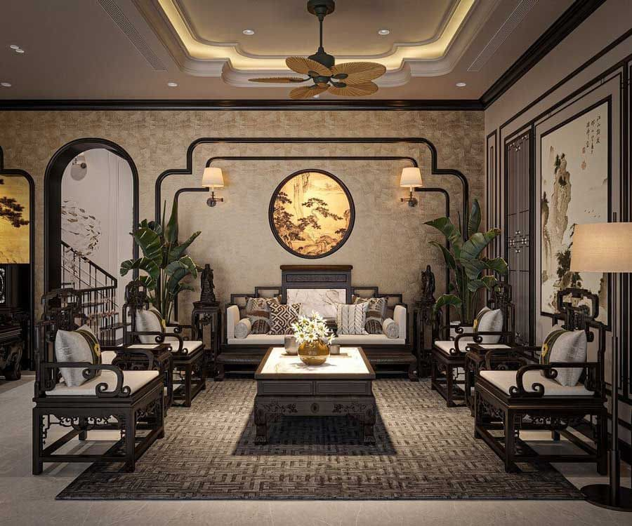
Phong cách thiết kế nội thất Indochine mang nét hoài cổ, sang trọng (C: Internet)
Trong thiết kế nội thất nhà ở, phong cách thiết kế nội thất Indochine ngày càng được nhiều gia chủ lựa chọn nhờ tính thẩm mỹ cao và giá trị bền vững theo thời gian.
- Về không gian: Thiết kế thường ưu tiên các sảnh lớn, trần cao, hành lang rộng và hệ cửa sổ lớn, được bố trí hài hòa theo tinh thần kiến trúc Đông Dương, tạo cảm giác thông thoáng và bề thế.
- Về màu sắc: Gam màu chủ đạo thường là vàng nhạt, vàng kem, trắng… kết hợp cùng các sắc màu ấm như đỏ, cam, vàng để tạo điểm nhấn, phù hợp với khí hậu nhiệt đới. Bên cạnh đó, các tông màu mát như xanh ngọc, xanh lá cũng được ứng dụng nhằm mang lại sự tươi mới và tràn đầy sức sống cho không gian.
- Về chất liệu – vật liệu: Phong cách thiết kế nội thất Indochine đề cao các vật liệu tự nhiên mang đậm dấu ấn phương Đông như gỗ tự nhiên, gỗ óc chó, mây, tre, gạch bông… Đồng thời, việc kết hợp linh hoạt với vật liệu hiện đại như kim loại, thép, đá, kính giúp không gian trở nên sang trọng hơn, đảm bảo độ bền, tính thẩm mỹ và thể hiện rõ cá tính của gia chủ.
- Về hoa văn – họa tiết: Các họa tiết kỷ hà, hoa văn Đông Sơn được cách điệu thành hình hoa lá, hình học hay biểu tượng mang ý nghĩa phong thủy như tứ linh (long, lân, quy, phụng), cá, dơi… thường xuyên xuất hiện, góp phần tạo nên bản sắc đặc trưng cho phong cách này.
- Về đồ nội thất: Nội thất Indochine là sự kết tinh giữa phong cách sống Pháp và văn hóa bản địa, thể hiện qua các vật dụng như phản, sập gụ, bình phong, đèn gốm, lục bình… cùng các chi tiết con tiện đặc trưng, mang lại vẻ đẹp vừa truyền thống vừa tinh tế.
Xem thêm: Phong cách nội thất Đông Dương là gì?
Phong cách thiết kế nội thất Tân cổ điển (Neo classic)
Phong cách thiết kế nội thất Tân cổ điển có nguồn gốc từ kiến trúc châu Âu, nổi bật với sự kết hợp hài hòa giữa nét cổ điển tinh tế và hơi thở hiện đại. Trong thiết kế nội thất, phong cách này mang đến vẻ đẹp sang trọng, thanh lịch và đầy tính nghệ thuật. Điểm đặc trưng dễ nhận thấy của phong cách thiết kế nội thất Tân cổ điển nằm ở sự cân đối trong bố cục không gian, các đường chỉ phào tinh xảo cùng cách sắp xếp nội thất mang tính đối xứng cao.
- Không gian thiết kế: Không gian theo phong cách Tân cổ điển thường được phân chia thành từng mảng rõ ràng, tuân thủ nguyên tắc “tỷ lệ vàng” chuẩn châu Âu. Cách bố trí này giúp tổng thể ngôi nhà trở nên cân bằng, hài hòa và tạo cảm giác rộng rãi, trang nhã.
- Màu sắc chủ đạo: Gam màu trong thiết kế nội thất Tân cổ điển thường thiên về các tông sáng và trung tính như trắng, kem hoặc vàng kem nhằm tạo nền sang trọng cho không gian. Các màu nhấn như đen, xám, xanh rêu hay đỏ booc-đô được sử dụng khéo léo để tăng chiều sâu và thể hiện sự đẳng cấp.
- Chất liệu và vật liệu: Phong cách nội thất Tân cổ điển ưu tiên các vật liệu cao cấp như đá hoa cương, gỗ tự nhiên, gỗ óc chó, da và kim loại mạ vàng. Những chất liệu này thường được gia công tỉ mỉ, mang lại vẻ ngoài sang trọng, sáng bóng và góp phần khẳng định gu thẩm mỹ của gia chủ.
- Hoa văn và họa tiết: Hoa văn trang trí là yếu tố không thể thiếu trong kiến trúc Tân cổ điển. Các chi tiết thường xuất hiện tại vòm cửa, cột tường, trần nhà hoặc đường chỉ phào. Nội thất như sofa, giường ngủ, tủ hay rèm cửa cũng được điểm xuyết họa tiết tinh tế, tạo nên tổng thể không gian giàu tính nghệ thuật và chiều sâu thẩm mỹ.
- Nội thất đặc trưng: Đồ nội thất Tân cổ điển thường được chế tác từ gỗ, kim loại và da cao cấp với đường nét mềm mại, uốn cong hoặc chạm khắc tinh xảo. Sự kết hợp giữa chất liệu sang trọng và thiết kế cầu kỳ giúp không gian trở nên đẳng cấp nhưng vẫn giữ được sự thanh lịch đặc trưng.
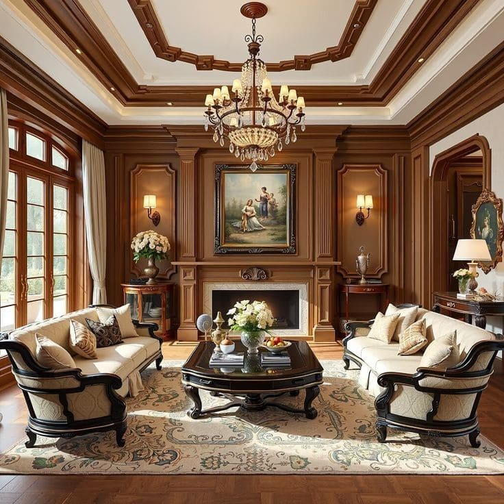
Phong cách thiết kế nội thất Tân cổ điển mang vẻ đẹp sang trọng, cân đối giữa nét cổ điển tinh tế và hơi thở hiện đại (C: Internet)
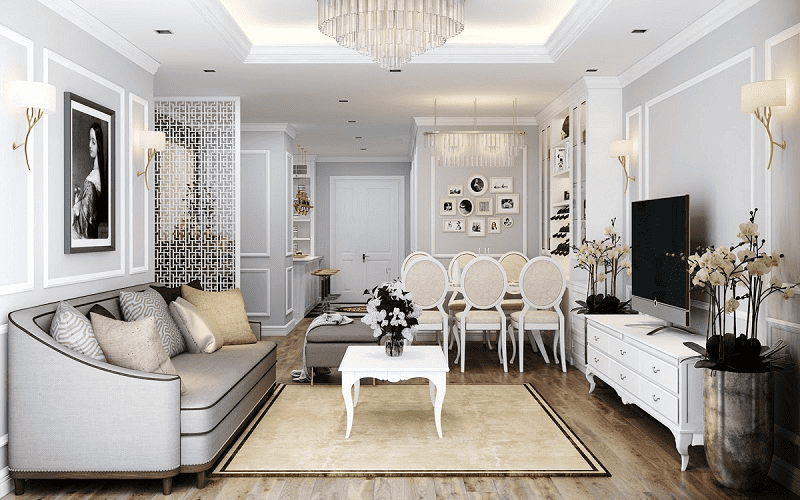
Phong cách thiết kế nội thất Neo Classic chú trọng đường nét tinh gọn, không gian trang nhã (C: Internet)
Xem thêm: Phong cách nội thất Tân cổ điển là gì?
Phong cách thiết kế nội thất Luxury
Nhiều khách hàng thường nhầm lẫn hoặc gọi phong cách thiết kế nội thất Tân cổ điển hiện đại là phong cách thiết kế nội thất Luxury bởi cả hai đều mang vẻ đẹp sang trọng và tinh tế. Tuy nhiên, phong cách Luxury trong thiết kế nội thất là sự nâng cấp vượt bậc, nơi các đường nét cổ điển được kết hợp cùng tinh thần hiện đại để tạo nên dấu ấn xa hoa và mang tính cá nhân hóa rõ rệt.
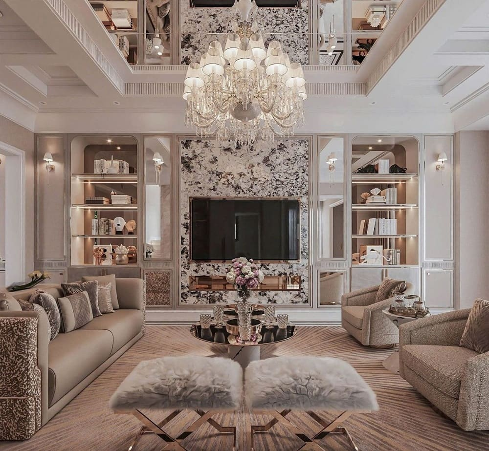
Phong cách thiết kế nội thất Luxury đề cao sự xa hoa thông qua vật liệu cao cấp (C: Internet)
Phong cách này không chỉ chú trọng thẩm mỹ mà còn thể hiện gu sống, đẳng cấp và cá tính riêng của gia chủ thông qua từng chi tiết thiết kế. Chính sự tinh xảo, cầu kỳ và độc bản đã giúp phong cách thiết kế nội thất Luxury trở thành lựa chọn hàng đầu trong các không gian sống cao cấp hiện nay.
- Không gian thiết kế: Không gian nội thất phong cách Luxury hướng đến sự hiện đại và cá nhân hóa cao. Mỗi thiết kế đều được “đo ni đóng giày” theo sở thích, phong cách sống và dấu ấn riêng của gia chủ, tạo nên không gian sống độc bản và khác biệt.
- Màu sắc đặc trưng: Các gam màu thường được sử dụng trong phong cách thiết kế nội thất Luxury gồm bạc, vàng, kem, đen hoặc các tông màu trung tính cao cấp. Sự phối hợp màu sắc được tính toán kỹ lưỡng nhằm tạo cảm giác sang trọng, quyền lực và đầy cuốn hút cho tổng thể không gian.
- Chất liệu và vật liệu cao cấp: Thiết kế nội thất Luxury ưu tiên các vật liệu cao cấp như gỗ tự nhiên, đá cẩm thạch, composite, pha lê cùng các chi tiết kim loại mạ vàng. Sự kết hợp giữa vật liệu hiện đại và truyền thống giúp nâng tầm giá trị thẩm mỹ, đồng thời mang lại trải nghiệm sống đẳng cấp và tiện nghi.
- Hoa văn và họa tiết tinh xảo: Phong cách thiết kế nội thất Luxury nổi bật với các đường phào chỉ, họa tiết trang trí tại vòm cửa, khung trần hay các mảng tường lớn. Những đường nét uốn lượn mềm mại được thiết kế tinh tế, kết hợp hài hòa giữa tính nghệ thuật và sự đồng nhất, tạo nên vẻ đẹp kiêu sa và đầy sức hút.
- Nội thất cao cấp: Đồ nội thất trong phong cách thiết kế nội thất Luxury được tuyển chọn kỹ lưỡng từ những chất liệu và thương hiệu cao cấp. Mỗi món đồ không chỉ phục vụ công năng mà còn đóng vai trò như một tác phẩm nghệ thuật, góp phần hoàn thiện không gian sống sang trọng và khác biệt.
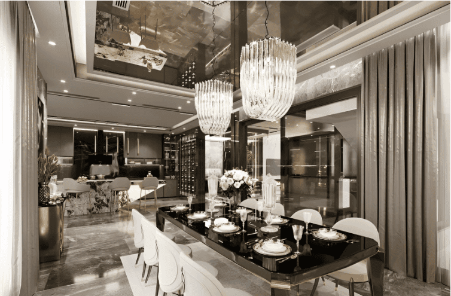
Không gian Luxury thể hiện đẳng cấp sống với thiết kế cá nhân hóa và tính thẩm mỹ sang trọng vượt chuẩn (C: Internet)
Phong cách thiết kế nội thất Tối giản (Minimalism)
Phong cách thiết kế nội thất Minimalism (tối giản) là xu hướng thiết kế tập trung vào sự đơn giản trong đường nét, hạn chế chi tiết và giảm thiểu số lượng nội thất không cần thiết. Mỗi yếu tố xuất hiện trong không gian đều được tính toán kỹ lưỡng, đảm bảo vừa đáp ứng công năng vừa giữ được tính thẩm mỹ và sự hài hòa tổng thể.
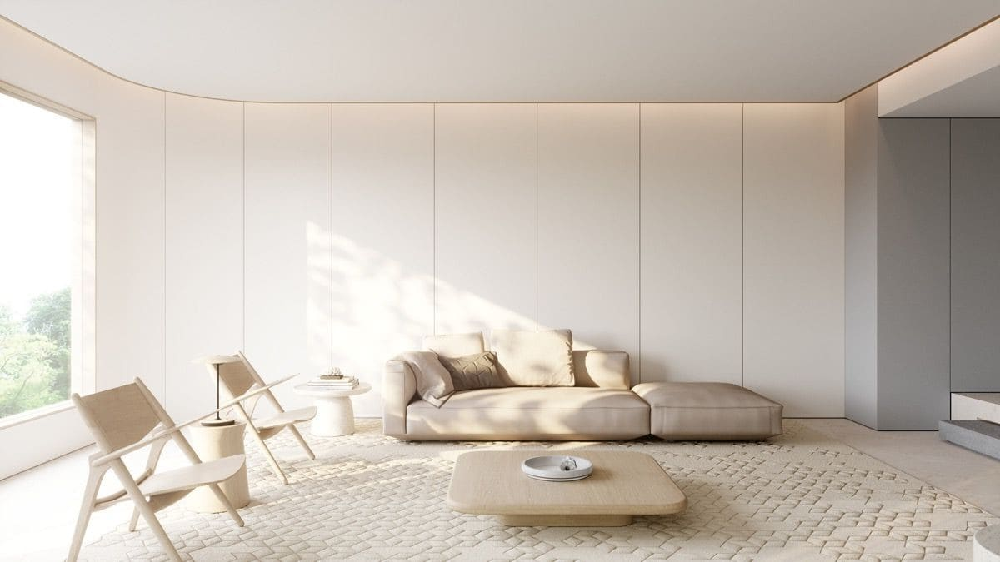
Phong cách thiết kế nội thất Tối giản hướng đến không gian gọn gàng, tinh tế (C: Internet)
Trong thiết kế nội thất Minimalism, sự chú ý không nằm ở các chi tiết trang trí cầu kỳ mà hướng đến vẻ đẹp của hình khối, vật liệu và hiệu ứng ánh sáng. Các bề mặt như tường, sàn và trần nhà trở thành yếu tố chủ đạo, góp phần tạo nên không gian thoáng đãng, rộng rãi và có tính kết nối cao. Nhờ bố cục chặt chẽ và tối ưu hóa chi tiết, phong cách tối giản mang lại cảm giác nhẹ nhàng, hiện đại và đầy tinh tế.
- Bảng màu tối giản: Không gian thường chỉ sử dụng tối đa ba gam màu gồm: một màu nền, một màu chủ đạo và một màu nhấn nhằm tạo sự cân bằng thị giác và cảm giác nhẹ nhàng.
- Ưu tiên tường trắng và bề mặt phẳng: Các mảng tường trắng hoặc trung tính được dùng làm nền giúp tôn lên nội thất, đồng thời tạo hiệu ứng mở rộng không gian, mang lại cảm giác sáng và thoáng hơn.
- Ánh sáng là yếu tố trang trí quan trọng: Ánh sáng tự nhiên và ánh sáng nhân tạo được khai thác như một phần của thiết kế, giúp tạo chiều sâu, nhấn mạnh hình khối và tăng giá trị thẩm mỹ cho không gian.
- Nội thất tối giản nhưng hiệu quả: Đồ nội thất được lựa chọn với số lượng vừa đủ, thiết kế gọn gàng, đa năng và chú trọng công năng sử dụng, tránh sự dư thừa trong bố trí.
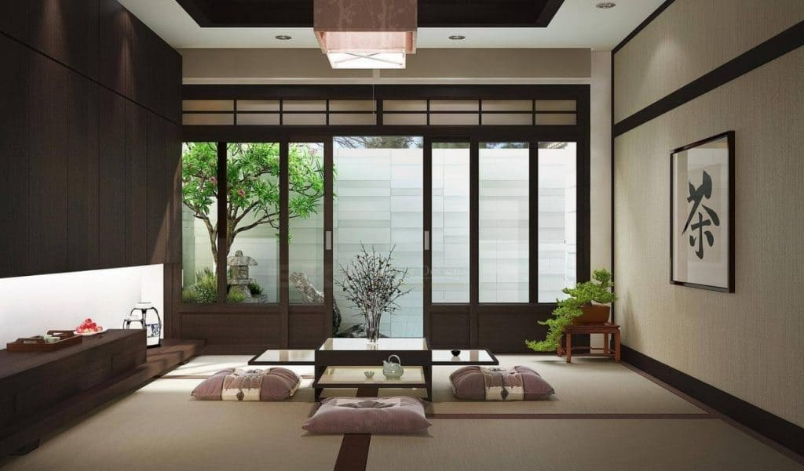
Phong cách thiết kế nội thất Minimalism đề cao bố cục tinh gọn, hạn chế chi tiết (C: Internet)
Xem thêm: Phong cách nội thất tối giản là gì?
Phong cách thiết kế nội thất Nhiệt đới (Tropical)
Phong cách thiết kế nội thất Nhiệt đới (Tropical Style) là xu hướng kiến trúc và nội thất lấy cảm hứng từ thiên nhiên vùng nhiệt đới, đặc biệt phù hợp với điều kiện khí hậu nóng ẩm tại Việt Nam. Phong cách này hướng đến việc tạo ra không gian sống sinh thái, thoáng mát và chan hòa với nắng, gió và cây xanh, mang lại cảm giác thư giãn như đang nghỉ dưỡng mỗi ngày.
- Không gian thiết kế mở, đón gió tự nhiên: Thiết kế nội thất Nhiệt đới ưu tiên tối đa sự kết nối giữa không gian sống và thiên nhiên bên ngoài. Các khu vực trong nhà thường được bố trí tiếp xúc trực tiếp với ánh sáng và luồng gió thông qua mặt tiền, sân sau, giếng trời hoặc hệ thống khe gió lệch tầng. Kiến trúc không gian mở, liên thông giữa các phòng giúp không khí lưu thông tự nhiên, tạo cảm giác mát mẻ và dễ chịu – đúng với tinh thần “đưa thiên nhiên vào nhà”.
- Màu sắc mang hơi thở vùng nhiệt đới: Bảng màu đặc trưng của phong cách này lấy cảm hứng từ thiên nhiên như xanh lá cây, xanh biển, xanh da trời hoặc các tông màu trung tính nhẹ nhàng. Những gam màu tươi sáng giúp không gian trở nên sinh động, tạo cảm giác thư thái và gần gũi với môi trường tự nhiên.
- Chất liệu và vật liệu tự nhiên: Phong cách thiết kế nội thất Nhiệt đới ưu tiên các vật liệu có nguồn gốc tự nhiên như gỗ tếch, mây, tre, cỏ biển, liễu gai hoặc các loại vải sợi tự nhiên như tơ lụa, linen. Những chất liệu này không chỉ thân thiện môi trường mà còn mang lại cảm giác mộc mạc, thoáng nhẹ và phù hợp với khí hậu nhiệt đới.
- Hoa văn và họa tiết đặc trưng: Các chi tiết trang trí thường gợi nhắc đến đời sống biển và rừng nhiệt đới như mái chèo, dây thừng, võng, đuốc trang trí hoặc hình ảnh chim nhiệt đới, cá biển và cây lá xanh mát. Những yếu tố này góp phần tạo nên bầu không khí nghỉ dưỡng tự nhiên và đầy sức sống.
- Nội thất thân thiện môi trường: Đồ nội thất trong phong cách Nhiệt đới chủ yếu được làm từ gỗ tự nhiên và vật liệu mây tre đan. Thiết kế hướng đến sự đơn giản, gọn gàng nhưng vẫn đảm bảo tính thẩm mỹ và cảm giác gần gũi với thiên nhiên, mang lại trải nghiệm sống thoải mái và bền vững.
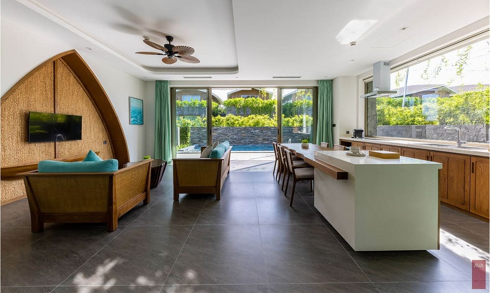
Phong cách thiết kế nội thất Nhiệt đới đưa thiên nhiên và ánh sáng vào không gian sống (C: Bellerive Resort)
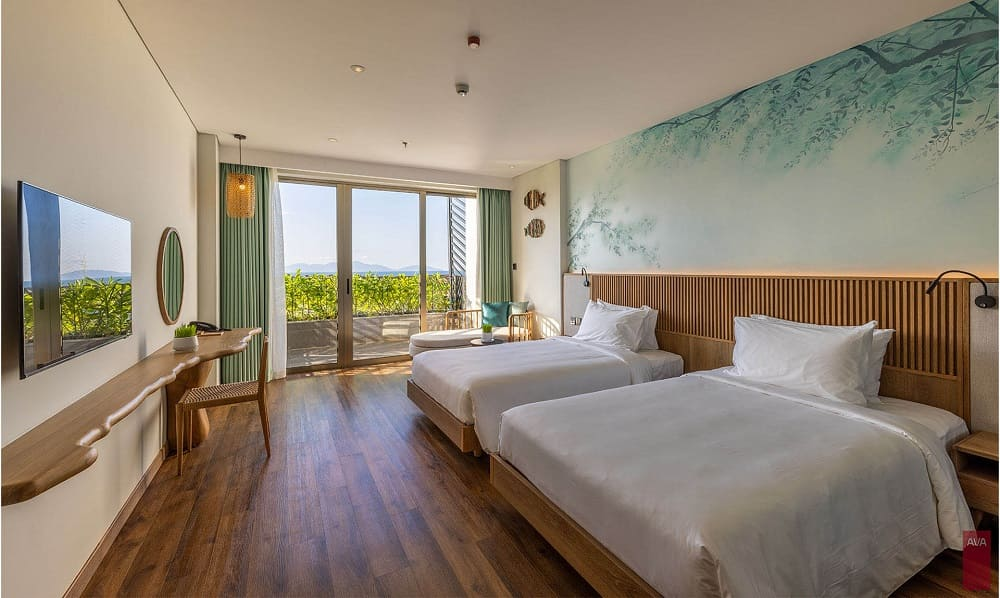
Phong cách thiết kế nội thất Tropical tạo không gian sống xanh mát, gần gũi thiên nhiên (C: Bellerive Resort)
Xem thêm: Phong cách nội thất Tropical là gì?
Phong cách thiết kế nội thất Wabi Sabi
Phong cách thiết kế nội thất Wabi Sabi là trường phái thiết kế nội thất bắt nguồn từ triết lý sống của Nhật Bản, đề cao sự mộc mạc, tự nhiên và vẻ đẹp của những điều chưa hoàn mỹ. Không hướng đến sự hào nhoáng hay hoàn chỉnh tuyệt đối, Wabi Sabi giúp con người tìm thấy sự bình yên trong những điều giản dị, nguyên bản và dấu vết của thời gian.
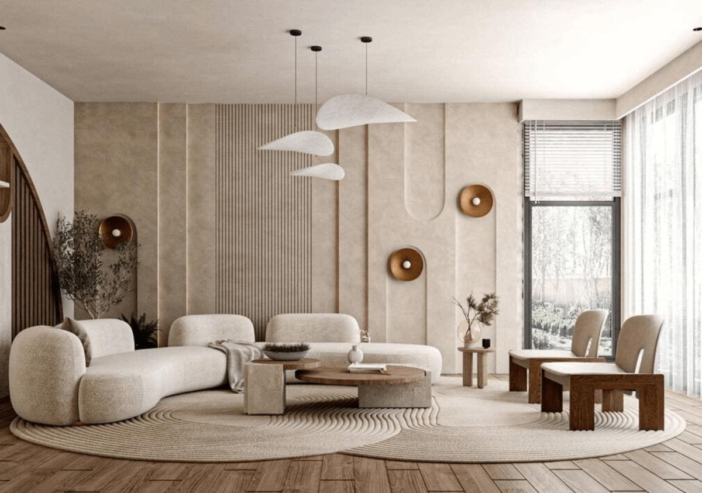
Phong cách thiết kế nội thất Wabi Sabi tôn vinh vẻ đẹp mộc mạc và sự không hoàn hảo tự nhiên (C: Internet)
Triết lý Wabi Sabi khuyến khích việc chấp nhận sự vô thường của vạn vật, trân trọng những giá trị chân thật và xem sự bất toàn như một phần tự nhiên của cuộc sống. Chính tinh thần này đã tạo nên một phong cách nội thất nhẹ nhàng, sâu lắng và giàu cảm xúc.
- Không gian tối giản và giàu tính thiền: Không gian theo phong cách thiết kế nội thất Wabi Sabi tập trung vào công năng sử dụng với cách bài trí tối giản, hạn chế đồ đạc dư thừa. Những bề mặt thô mộc, dấu vết cũ kỹ hay sự hao mòn theo thời gian đều được giữ lại như một phần của vẻ đẹp tự nhiên. Khoảng trống đóng vai trò quan trọng trong thiết kế, giúp tạo sự cân bằng và mang đến cảm giác tĩnh lặng. Ánh sáng tự nhiên từ cửa sổ kết hợp cùng bố cục không gian mở tạo nên bầu không khí thư thái, nơi con người có thể tìm thấy sự an yên và trạng thái “Zen” ngay trong chính ngôi nhà của mình.
- Màu sắc trầm lắng, gần gũi thiên nhiên: Bảng màu Wabi Sabi ưu tiên các gam màu trung tính và dịu nhẹ như be đất, xám nâu, trắng ngà hoặc màu đất tự nhiên. Những sắc độ này không quá tương phản hay rực rỡ mà mang cảm giác êm dịu, giúp không gian trở nên bình yên và dễ chịu, hỗ trợ tinh thần thư giãn và tĩnh tâm.
- Chất liệu tự nhiên và nguyên bản: Phong cách thiết kế nội thất Wabi Sabi tôn vinh vẻ đẹp nguyên sơ của vật liệu thông qua việc giữ lại kết cấu tự nhiên thay vì xử lý quá hoàn hảo. Các chất liệu thường được sử dụng gồm gỗ, đá, đất sét, kim loại thô, vải dệt tự nhiên hoặc sợi hữu cơ. Những dấu vết thời gian trên vật liệu được xem là giá trị thẩm mỹ đặc trưng, phản ánh vòng đời tự nhiên của sự vật.
- Hoa văn và họa tiết giản lược: Thiết kế nội thất Wabi Sabi hạn chế tối đa các chi tiết trang trí cầu kỳ. Hoa văn và họa tiết thường đơn giản, không trau chuốt quá mức, giữ lại vẻ thô mộc và chân thật. Chính sự không hoàn hảo có chủ ý này tạo nên chiều sâu cảm xúc và nét đẹp riêng biệt cho không gian.
- Nội thất đề cao giá trị bền vững: Đồ nội thất trong phong cách Wabi Sabi chú trọng tính bền bỉ và công năng sử dụng lâu dài. Thay vì loại bỏ những món đồ trầy xước hay nứt vỡ, chúng được sửa chữa và tiếp tục sử dụng, điển hình như nghệ thuật Kintsugi – hàn gắn đồ gốm bằng vàng, biến khiếm khuyết thành điểm nhấn nghệ thuật đầy ý nghĩa.
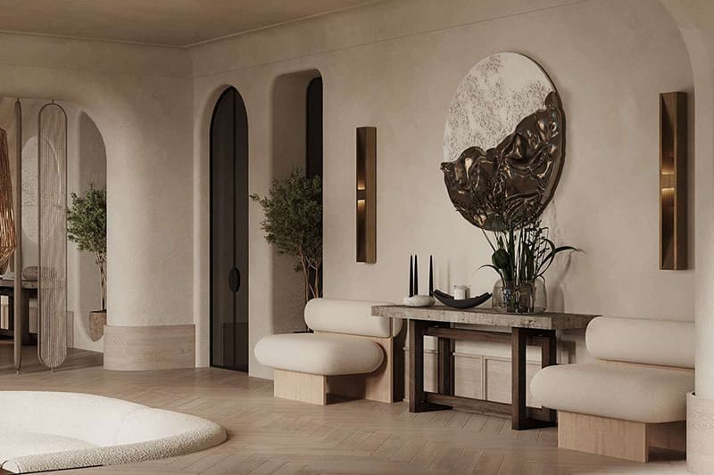
Phong cách thiết kế nội thất Wabi Sabi mang đến không gian sống yên tĩnh, giản dị (C: Internet)
Phong cách thiết kế nội thất Rustic
Phong cách thiết kế nội thất Rustic là xu hướng thiết kế nội thất đề cao sự giản dị, tự nhiên và gần gũi với môi trường sống. Không cầu kỳ hay phô trương, Rustic mang đến cảm giác ấm áp, chân thật thông qua việc giữ lại vẻ đẹp nguyên bản của vật liệu và không gian. Đây là phong cách lý tưởng cho những ai yêu thích sự bình yên, thoải mái nhưng vẫn đảm bảo tính tiện nghi hiện đại.
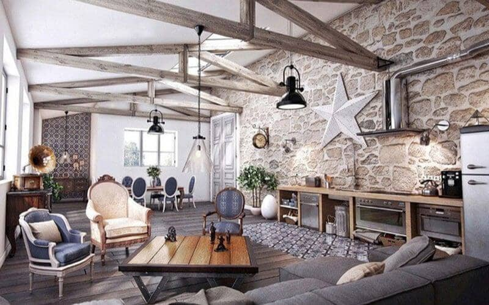
Phong cách thiết kế nội thất Rustic mang vẻ đẹp mộc mạc với vật liệu tự nhiên (C: Internet)
Rustic hiện đại là sự kết hợp hài hòa giữa các yếu tố tự nhiên và nội thất contemporary, tạo nên không gian sống vừa thanh lịch vừa gần gũi. Ánh sáng tự nhiên, vật liệu thô mộc cùng bảng màu trung tính giúp ngôi nhà trở nên nhẹ nhàng, thư giãn và đầy sức sống.
- Xà dầm gỗ thô đặc trưng: Các hệ xà dầm gỗ tự nhiên thường được giữ nguyên kết cấu thô nhằm tạo điểm nhấn kiến trúc, đồng thời tăng cảm giác kết nối giữa không gian sống và thiên nhiên.
- Chất liệu vải tự nhiên giản dị: Những loại vải có nguồn gốc tự nhiên như linen, cotton, len, đay hoặc vải gai được sử dụng phổ biến. Các sản phẩm như rèm cửa, thảm, chăn hoặc khăn trải bàn thường hạn chế hoa văn, ưu tiên sự đơn giản và mộc mạc.
- Cửa sổ lớn đón ánh sáng tự nhiên: Thiết kế cửa sổ kích thước lớn giúp tận dụng tối đa ánh sáng trời, tạo sự thông thoáng và tăng khả năng kết nối giữa không gian nội thất với cảnh quan bên ngoài.
- Nội thất tiện nghi kết hợp hiện đại: Rustic không đồng nghĩa với cũ kỹ. Các món nội thất thông minh, tiện ích hiện đại vẫn được ứng dụng, đặc biệt là đồ gỗ tự nhiên hoặc da thô, mang lại sự cân bằng giữa tiện nghi và thẩm mỹ.
- Gam màu tự nhiên, nhẹ nhàng: Bảng màu chủ đạo thường gồm trắng, màu gỗ, màu đá hoặc các tông trung tính dịu nhẹ, giúp không gian trở nên ấm áp, gần gũi và mang đậm hơi thở thiên nhiên.
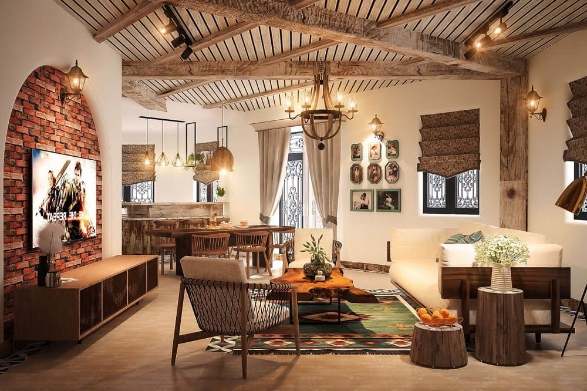
Phong cách thiết kế nội thất Rustic tạo cảm giác gần gũi nhờ đường nét giản dị và chất liệu thô nguyên bản (C: Internet)
Phong cách thiết kế nội thất Color Block
Phong cách thiết kế nội thất Color Block trong thiết kế nội thất được lấy cảm hứng trực tiếp từ xu hướng thời trang cùng tên, nổi bật với cách phối các mảng màu lớn có độ tương phản cao. Thay vì sử dụng bảng màu đơn sắc truyền thống, Color Block tạo điểm nhấn bằng những khối hình học rực rỡ, mang lại không gian sống trẻ trung, sáng tạo và giàu năng lượng.
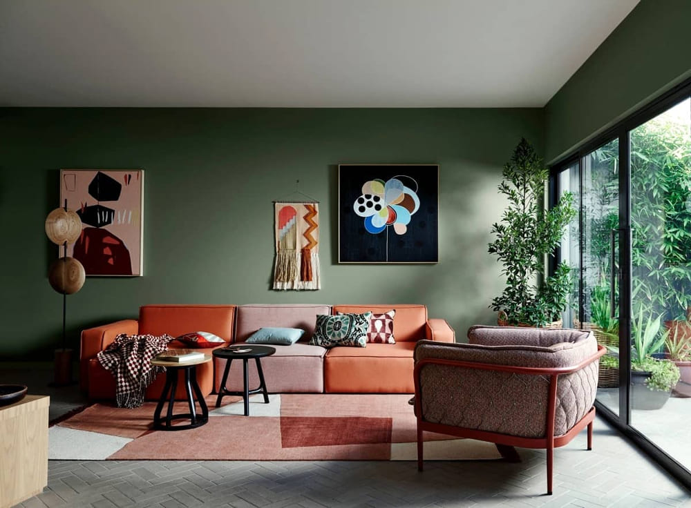
Phong cách thiết kế nội thất Color Block sử dụng mảng màu tương phản để tạo điểm nhấn (C: Internet)
Xu hướng này phù hợp với những ai yêu thích sự phá cách, mong muốn thể hiện cá tính riêng thông qua màu sắc và cách bố trí không gian độc đáo.
- Sử dụng các khối màu tương phản nổi bật: Không gian Color Block thường xuất hiện các mảng màu lớn với sắc độ đối lập mạnh như xanh – vàng, đỏ – xanh dương hoặc cam – tím. Những khối màu này được sắp xếp theo hình vuông, chữ nhật hoặc hình tròn nhằm tạo hiệu ứng thị giác ấn tượng.
- Nền trung tính làm nổi bật màu sắc: Tường màu trắng, be hoặc xám thường được sử dụng làm phông nền để tôn lên các mảng màu rực rỡ. Việc bố trí khối màu theo chiều ngang giúp không gian trông rộng hơn, trong khi sắp xếp theo chiều dọc tạo cảm giác trần nhà cao và thoáng.
- Tạo điểm nhấn bằng phụ kiện nội thất: Color Block không chỉ thể hiện qua sơn tường mà còn thông qua cách phối đồ nội thất và phụ kiện như gối trang trí, chăn, rèm cửa, thảm hoặc vải bọc ghế. Sự kết hợp khéo léo giữa màu sắc và vật dụng giúp tổng thể không gian trở nên sinh động mà vẫn hài hòa.
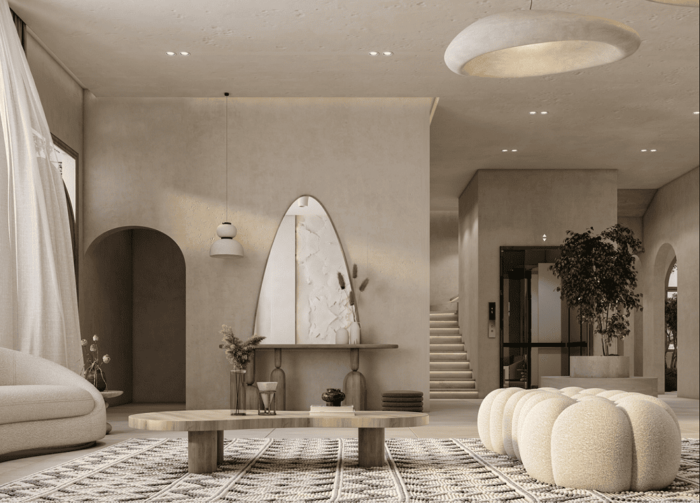
Phong cách thiết kế nội thất Color Block mang lại không gian trẻ trung và cá tính (C: Internet)
Xem thêm:
- Phong cách nội thất hiện đại là gì?
- TOP công ty thiết kế nội thất uy tín Đà Nẵng
- Thiết kế thi công nội thất căn hộ Đà Nẵng
Phong cách thiết kế nội thất Bắc Âu (Scandinavian)
Phong cách thiết kế nội thất Scandinavian (Bắc Âu) là xu hướng thiết kế nội thất nổi bật với sự kết hợp hài hòa giữa ba yếu tố cốt lõi: tối giản trong hình thức – tiện nghi trong công năng – gần gũi với thiên nhiên. Phong cách này mang đến không gian sống hiện đại, nhẹ nhàng nhưng vẫn ấm áp và đầy cảm giác thư giãn.
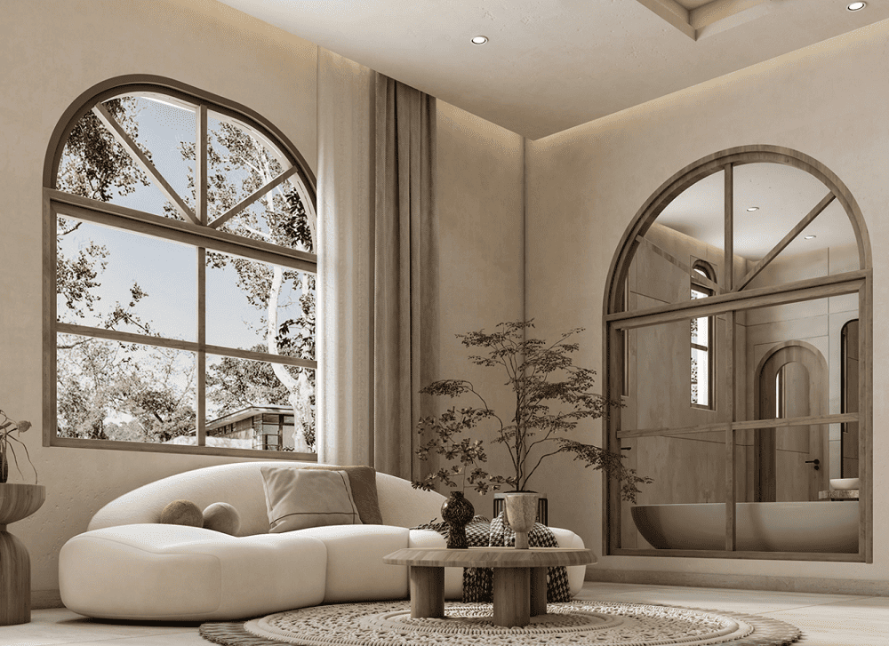
Phong cách thiết kế nội thất Bắc Âu mang vẻ đẹp tối giản, ấm áp và gần gũi thiên nhiên (C: Internet)
Nhờ sự giản dị, thông thoáng và tính ứng dụng cao, Scandinavian ngày càng được nhiều gia chủ lựa chọn cho căn hộ và nhà ở hiện đại, đặc biệt phù hợp với lối sống tối giản nhưng vẫn đề cao sự tiện nghi.
- Không gian mở, ưu tiên ánh sáng tự nhiên: Thiết kế nội thất Scandinavian hướng đến không gian mở với bố cục gọn gàng và hạn chế vách ngăn. Cửa sổ lớn được tận dụng để đón ánh sáng tự nhiên tối đa, giúp không gian luôn sáng sủa, thoáng đãng và tạo cảm giác rộng rãi hơn.
- Màu sắc trung tính đặc trưng: Bảng màu chủ đạo của phong cách thiết kế nội thất Bắc Âu thường là các gam màu trung tính như trắng, xám, xanh đậm hoặc màu đất tự nhiên. Sự kết hợp giữa các tông màu sáng và điểm nhấn tương phản giúp cân bằng thị giác, đồng thời tạo hiệu ứng mở rộng không gian theo chiều cao và chiều sâu.
- Chất liệu tự nhiên gần gũi: Scandinavian ưu tiên sử dụng các vật liệu tự nhiên như gỗ, đá và da nhằm mang lại cảm giác ấm cúng và thân thiện. Gỗ sáng màu đặc biệt được sử dụng phổ biến để tăng sự nhẹ nhàng và giữ đúng tinh thần thiên nhiên của phong cách Bắc Âu.
- Hoa văn và họa tiết tối giản: Đúng với tinh thần đơn giản, các họa tiết trang trí trong phong cách thiết kế nội thất Scandinavian thường là kẻ sọc, caro hoặc các hình học cơ bản. Ngày nay, nhiều thiết kế còn kết hợp họa tiết lấy cảm hứng từ văn hóa dân tộc và gam màu trắng – đen để tạo chiều sâu và điểm nhấn hiện đại cho không gian.
- Nội thất hiện đại, đề cao công năng: Đồ nội thất Scandinavian có thiết kế thanh thoát, đường nét gọn gàng và chú trọng tính ứng dụng. Mỗi món đồ đều phục vụ mục đích sử dụng rõ ràng, giúp không gian sống luôn ngăn nắp, tiện nghi nhưng vẫn giữ được vẻ đẹp tinh tế đặc trưng.
Phong cách thiết kế nội thất Japandi
Phong cách thiết kế nội thất Japandi là sự kết hợp hài hòa giữa hai trường phái thiết kế nổi tiếng: Japanese (Nhật Bản) và Scandinavian (Bắc Âu). Tên gọi “Japandi” cũng chính là sự ghép nối từ hai phong cách này, tạo nên một xu hướng nội thất mang vẻ đẹp tối giản, ấm áp và cân bằng giữa công năng và cảm xúc.
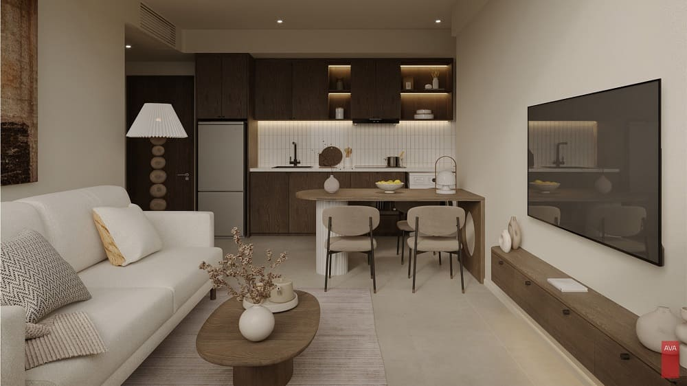
Phong cách thiết kế nội thất Japandi kết hợp tinh thần tối giản Nhật Bản và sự ấm áp Bắc Âu (C: Aries Building – AVA Architects)
Japandi kế thừa sự tinh tế, trầm tĩnh của phong cách Nhật Bản cùng nét hiện đại, tiện nghi và ấm cúng của Scandinavian. Nhờ đó, không gian sống trở nên thanh lịch, nhẹ nhàng hơn phong cách tối giản truyền thống nhưng vẫn giữ được sự gọn gàng và gần gũi với thiên nhiên.
- Không gian nhẹ nhàng, đậm tinh thần Zen: Không gian nội thất Japandi ưu tiên ánh sáng tự nhiên, tạo cảm giác thoáng đãng và thư thái. Các điểm nhấn màu gỗ trầm hoặc tông màu tối được sử dụng vừa phải nhằm tạo chiều sâu cho không gian. Tổng thể thiết kế hướng đến sự tĩnh lặng, cân bằng và lan tỏa tinh thần Zen đặc trưng.
- Màu sắc trầm ấm và trưởng thành: Khác với những phong cách sử dụng gam màu pastel nổi bật, Japandi tập trung vào bảng màu trung tính như màu gỗ, màu đất, be, xám hoặc nâu trầm. Những tông màu nhẹ nhàng này giúp không gian trở nên bình yên, tinh tế và mang cảm giác trưởng thành. Các gam màu quá rực rỡ như hồng hay cam thường được hạn chế để giữ sự thanh lịch vốn có.
- Chất liệu tự nhiên, giữ nguyên vẻ mộc mạc: Phong cách thiết kế nội thất Japandi đề cao vật liệu tự nhiên như gỗ, gốm, vải thô, cói hoặc sợi tự nhiên. Các chất liệu thường được xử lý tối giản nhằm giữ lại kết cấu nguyên bản, tạo cảm giác chân thật, giản dị và gần gũi với thiên nhiên.
- Hoa văn tối giản: Trang trí trong phong cách Japandi hướng đến sự tiết chế, hạn chế họa tiết phức tạp. Các chi tiết decor đơn giản giúp không gian giữ được sự tinh gọn, đồng thời tạo nên vẻ đẹp nhẹ nhàng và tinh tế.
- Nội thất tinh giản, đề cao khoảng trống: Đồ nội thất Japandi được lựa chọn với số lượng vừa đủ, tránh bố trí dày đặc. Khoảng trống trong không gian được xem là một phần quan trọng của thiết kế, giúp tạo cảm giác thanh tịnh và cân bằng. Nội thất thường có kích thước vừa phải, đường nét đơn giản và phù hợp với diện tích tổng thể của căn phòng.
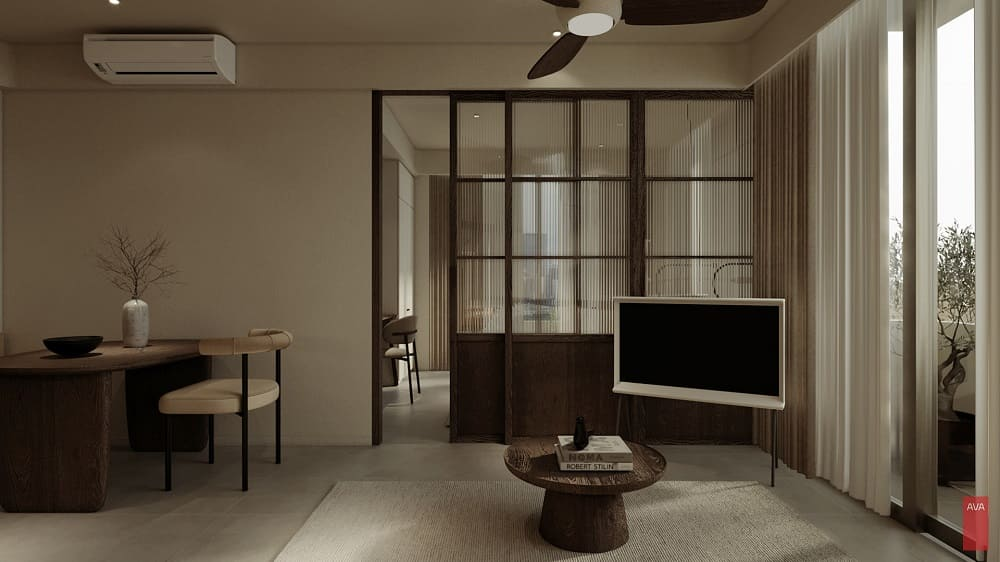
Phong cách thiết kế nội thất Japandi mang đến không gian sống cân bằng, nhẹ nhàng và tinh tế (C: Aries Building – AVA Architects)
Xem thêm:
- Các phong cách kiến trúc nổi bật ở Việt Nam
- 100+ mẫu thiết kế nội thất căn hộ đẹp, hiện đại
- Quy trình thiết kế thi công nội thất trọn gói
Phong cách thiết kế nội thất Địa Trung Hải (Mediterranean)
Phong cách thiết kế nội thất Địa Trung Hải (Mediterranean Style) là sự giao thoa tinh tế giữa nhiều trường phái kiến trúc châu Âu như Tây Ban Nha Colonial, Ý Phục Hưng, Tây Ban Nha Phục Hưng, Beaux-Arts và Gothic Venice. Phong cách này nổi bật với tinh thần tự do, gần gũi thiên nhiên và tái hiện cảm giác thư thái của những vùng biển đầy nắng gió.
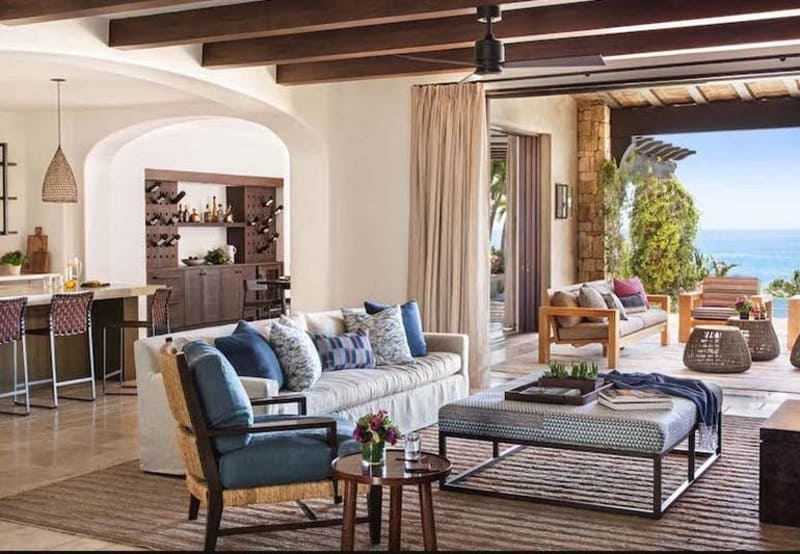
Phong cách thiết kế nội thất Địa Trung Hải mang hơi thở biển cả (C: Internet)
Thiết kế nội thất Địa Trung Hải hướng đến việc tạo nên không gian sống xanh, thoáng đãng và giàu năng lượng, mang lại trải nghiệm như đang tận hưởng kỳ nghỉ tại các bờ biển Địa Trung Hải yên bình.
- Không gian rộng mở, đậm chất nghỉ dưỡng: Không gian theo phong cách Địa Trung Hải thường được thiết kế rộng rãi, thông thoáng với sự lưu thông không khí tự nhiên tốt. Kiến trúc ưu tiên ánh sáng trời và sự kết nối với thiên nhiên, mang đến cảm giác mát mẻ, dễ chịu và gần gũi với biển cả.
- Màu sắc tươi sáng lấy cảm hứng từ thiên nhiên: Bảng màu đặc trưng của phong cách này được lấy cảm hứng trực tiếp từ cảnh quan vùng biển Địa Trung Hải như xanh dương của bầu trời và đại dương, trắng của cát biển, vàng nhạt của ánh nắng, nâu đất nung terra, xanh olive hay tím oải hương. Những gam màu rực rỡ nhưng được phối hợp hài hòa giúp không gian luôn tràn đầy sức sống mà vẫn tạo cảm giác thư giãn.
- Chất liệu tự nhiên đặc trưng: Thiết kế nội thất Địa Trung Hải ưu tiên sử dụng các vật liệu tự nhiên như đá cẩm thạch, gạch mosaic, gốm sứ, gỗ tự nhiên hoặc tre nứa. Những chất liệu này không chỉ tăng tính thẩm mỹ mà còn góp phần tạo nên vẻ đẹp mộc mạc và bền vững cho không gian sống.
- Hoa văn và họa tiết thiên nhiên: Các họa tiết trang trí thường lấy cảm hứng từ thiên nhiên như sóng biển, cây cỏ, hoa lá hoặc hình khối truyền thống vùng ven biển. Chi tiết trang trí giúp không gian trở nên sinh động nhưng vẫn giữ được nét nhẹ nhàng đặc trưng.
- Nội thất giản dị, gần gũi: Đồ nội thất phong cách Địa Trung Hải không quá cầu kỳ hay xa hoa mà hướng đến sự đơn giản, tiện dụng và thoải mái. Thiết kế ưu tiên đường nét gọn gàng, vật liệu tự nhiên nhằm tạo nên không gian sống ấm áp, thân thiện và đậm chất nghỉ dưỡng.
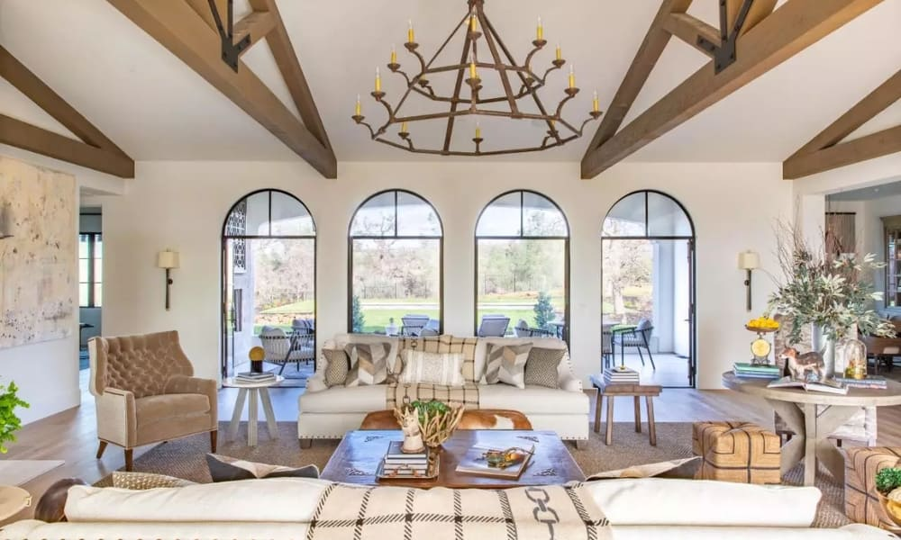
Phong cách thiết kế nội thất Mediterranean tạo không gian sống phóng khoáng, đậm chất nghỉ dưỡng ven biển (C: Internet)
Tóm lại, mỗi phong cách thiết kế nội thất đều mang một dấu ấn thẩm mỹ và triết lý sống riêng, từ tối giản hiện đại đến sang trọng, mộc mạc hay gần gũi thiên nhiên. Việc lựa chọn phong cách phù hợp không chỉ giúp tối ưu công năng mà còn thể hiện cá tính và nâng tầm trải nghiệm sống trong từng không gian. Nếu bạn đang tìm kiếm giải pháp thiết kế chuyên nghiệp, đồng hành cùng AVA Architects để kiến tạo không gian sống hài hòa, tinh tế và đúng với phong cách riêng của bạn.
- Market Analyst
- Mỹ Vân là Chuyên viên Phân tích Thị trường, đảm nhận vai trò nghiên cứu và phân tích chuyên sâu các xu hướng của ngành kiến trúc, loại hình dự án và thị trường bất động sản cho AVA Architects. Vân đã và đang hỗ trợ AVA Architects liên tục đổi mới và đưa ra quyết định chiến lược chính xác, đồng thời cung cấp cho khách hàng những góc nhìn giá trị để đưa ra lựa chọn đầu tư hiệu quả nhất. Tất cả đều hướng tới mục tiêu củng cố vị thế tiên phong của AVA và cùng khách hàng kiến tạo nên những giá trị bền vững cho tương lai.
 Blog thiết kế AVA14/09/202699+ Mẫu biệt thự phố đẹp, hiện đại, xu hướng năm 2026
Blog thiết kế AVA14/09/202699+ Mẫu biệt thự phố đẹp, hiện đại, xu hướng năm 2026 Blog thiết kế AVA10/09/2026999+ mẫu biệt thự đẹp đẳng cấp, sang trọng nhất 2026
Blog thiết kế AVA10/09/2026999+ mẫu biệt thự đẹp đẳng cấp, sang trọng nhất 2026 Blog thiết kế AVA09/09/2026Mẫu biệt thự hiện đại sang trọng, hiện đại 2026
Blog thiết kế AVA09/09/2026Mẫu biệt thự hiện đại sang trọng, hiện đại 2026 Blog thi công AVA28/04/2026Lợi ích khi xây nhà trọn gói bạn nhất định phải biết
Blog thi công AVA28/04/2026Lợi ích khi xây nhà trọn gói bạn nhất định phải biết